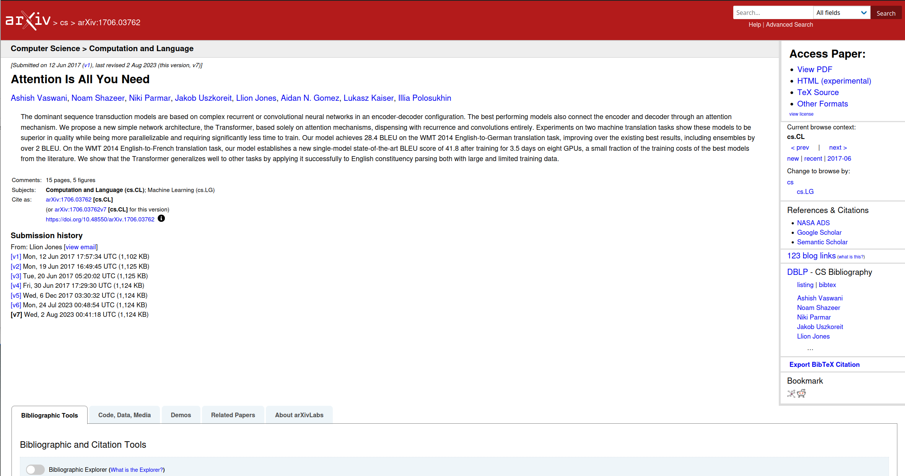
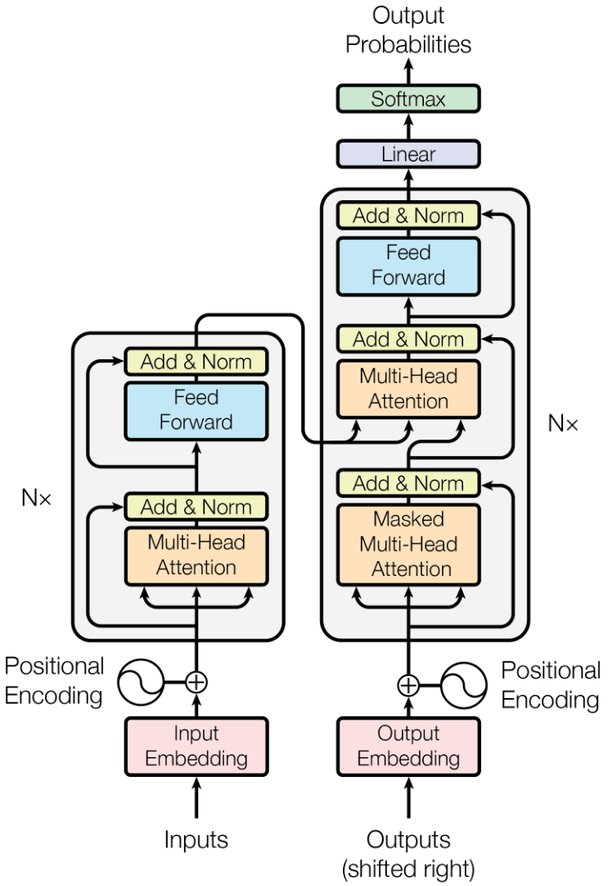
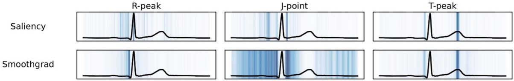

DAT255: Deep learning engineering
Lecture 9 – Gradients, and a bit more about time series
Topics for today
Split topics for this lecture:
- Time series
- A different time series forecasting task: Anomaly detection
- Modern sequence prediction models: A peek on the Transformer
- Investigating models though gradients
- Explaining predictions
- Hacking machine learning models ☠️
Anomaly detection
Let’s have a look at an self-supervised machine learning task:
Detecting anomalies or outliers.
Setting: Have either
- few examples, or
- no examples
of the positive class.
Anomaly detection
Approach:
Train a model to reconstruct normal data.
Need an encoder-decoder type model, for instance an autoencoder:
Autoencoders
Autoencoders are trained to reconstruct their input \(\boldsymbol{x}\), i.e. approximate a composite function \(g(f(\boldsymbol{x}))\) so that
\[
\small
\begin{align}
\boldsymbol{x} - \boldsymbol{\hat{x}} &= \\
\boldsymbol{x}- g(f(\boldsymbol{x, \theta}), \boldsymbol{\theta'}) &\to 0
\end{align}
\]
- \(f\) learns to compress data into an efficient representation
- \(g\) learns to do the inverse operation (decompress)
No target \(y\) involved!
Usually choose the loss function to be mean squared error, but this depends on the task.
Anomaly detection with autoencoders
Since we know the true \(\boldsymbol{x}\), we can estimate how “surprising” it is by comparing to the reconstructed \(\boldsymbol{\hat{x}}\)
(basically use models as test if it looks like training data)
Contains expected features
-> Good reconstruction (\(|\boldsymbol{x}-\boldsymbol{\hat{x}}|\) small)
Contains unexpected features
-> Poor reconstruction (\(|\boldsymbol{x}-\boldsymbol{\hat{x}}|\) large)
Anomaly detection for time series
Notebook for this week:
Build an encoder-decoder CNN model for 1D data
Anomaly detection for time series
Notebook for this week:
Build an encoder-decoder CNN model for 1D data
Modern networks for sequences and time series
Recurrent networks:
+ Maintain context by storing and updating an internal state
- Difficult to store entire contect in a fixed-length state vector (\(\boldsymbol{z}^{\ast}\))
- Sequential processing (for loops) slow down training
Modern networks for sequences and time series
A more powerful and scalable approach is the Transformer model


Recap: Optimisation with gradients
Question:
If we vary the parameters \(\boldsymbol{\theta}\) of model, how does it affect the predictions?
Quantify this by computing the gradient of the loss \(L\) with respect to the model parameters \(\boldsymbol{\theta}\):
\[
\nabla \color{MediumVioletRed}{L}(\color{teal}{\boldsymbol{\theta}}) =
\begin{bmatrix}
\frac{\partial \color{MediumVioletRed}{L}}{\partial \color{teal}{\theta}_0} \\
\vdots \\
\frac{\partial \color{MediumVioletRed}{L}}{\partial \color{teal}{\theta}_n} \\
\end{bmatrix}
\]
Basically: Vary \(\theta\) check effect on \(L\)
Gradients: explainability
Let’s turn it around and ask a different question:
If we vary the data \(\boldsymbol{x}\), how does it affect the prediction?
Can use this for per-datapoint explanations of model decision.
Compute then the gradient of the model output \(S\) with respect to input data \(x\).
Gradients: explainability
Example:
For an image classifier we have two classes, cat and dog. Differentiating the score for cat, \(S_c\), with respect to the pixel values \(x_1, \dots, x_n\), gives an attribution of each pixels’ importance to the classification
\[
\small
\nabla S_c (\boldsymbol{x}) =
\begin{bmatrix}
\frac{\partial \color{MediumVioletRed}{S_c}}{\partial \color{teal}{x}_0} \\
\vdots \\
\frac{\partial \color{MediumVioletRed}{S_c}}{\partial \color{teal}{x}_n} \\
\end{bmatrix}
\leftarrow \mathrm{attribution\; map}
\]
Gradients: explainability
Example:
For an image classifier we have two classes, cat and dog. Differentiating the score for cat, \(S_c\), with respect to the pixel values \(x_1, \dots, x_n\), gives an attribution of each pixels’ importance to the classification
\[
\small
\nabla S_c (\boldsymbol{x}) =
\begin{bmatrix}
\frac{\partial \color{MediumVioletRed}{S_c}}{\partial \color{teal}{x}_0} \\
\vdots \\
\frac{\partial \color{MediumVioletRed}{S_c}}{\partial \color{teal}{x}_n} \\
\end{bmatrix}
\leftarrow \mathrm{attribution\; map}
\]

Attribution methods
Two problems with using the (only) the gradient:
- Gradients looks rather noisy
- If using ReLU and output activations are 0, the gradient is also 0.
Some solutions:
- Add noise and average: SmoothGrad
Attribution methods
Two problems with using the (only) the gradient:
- Gradients looks rather noisy
- If using ReLU and output activations are 0, the gradient is also 0.
Some solutions:
Add noise and average: SmoothGrad
Make a baseline and integrate: Integrated gradients
Attribution methods
Two problems with using the (only) the gradient:
- Gradients looks rather noisy
- If using ReLU and output activations are 0, the gradient is also 0.
Some solutions:
- Be clever about how gradients are propagated through the activation functions: DeepLift, Deconvolution, Layerwise relevance propagation
Adversarial attacks
Two observations from our pixel attributions:
- Gradients look noisy
- A few pixels have very large gradients
(and thereby a large impact on the classification)
Constructing adversarial examples
From the gradient \(\nabla S_c\) we know which pixels were important to make the correct prediction
Adjust their values in the opposite direction
(Many sophisticated variants exist)
Adversarial attacks
Targeted attacks need access to the model on order to compute gradients
Black box attacks: Constructing adversarial examples purely by analysing outputs for given inputs (more difficult)
Some defense strategies:
- Training on adversarial examples
- Ensembling
- Augmentation